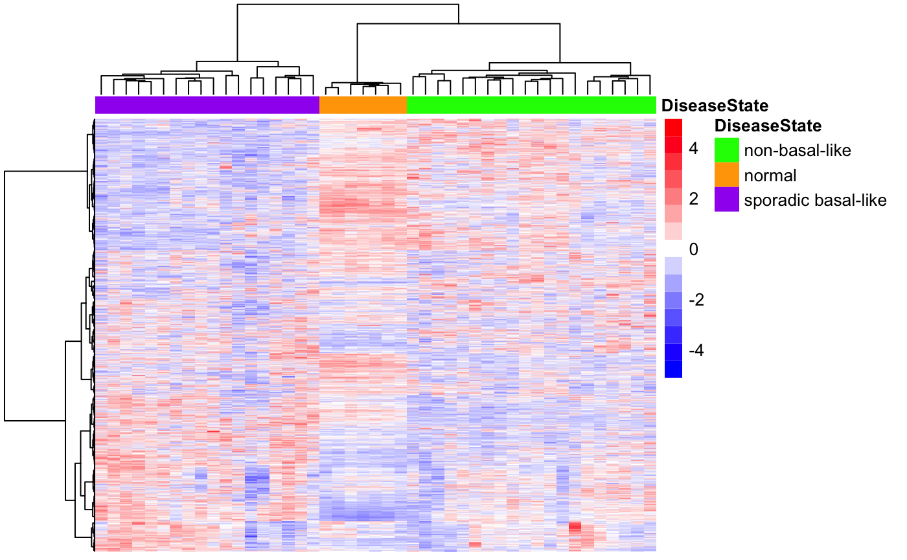
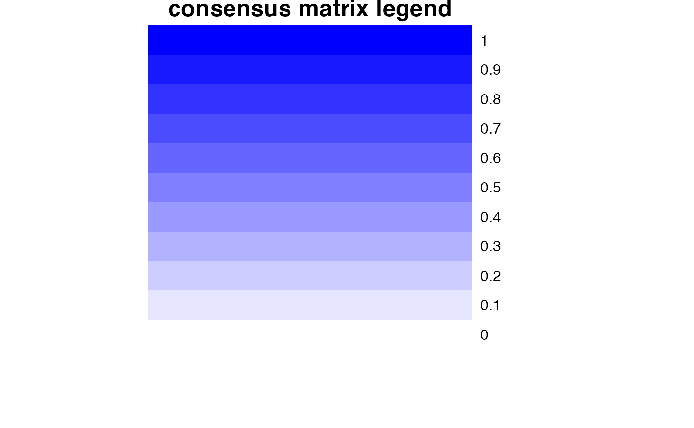
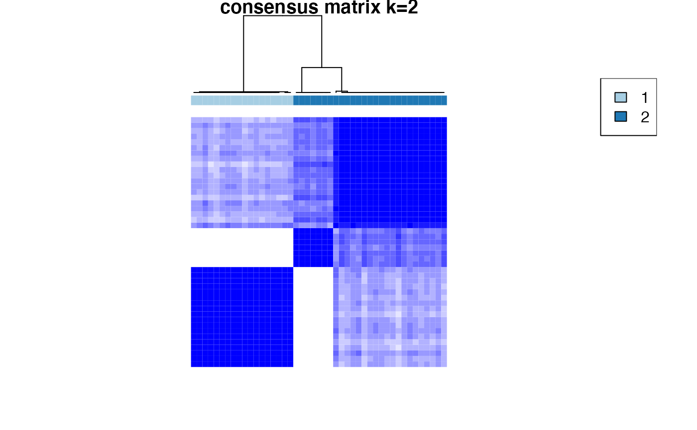
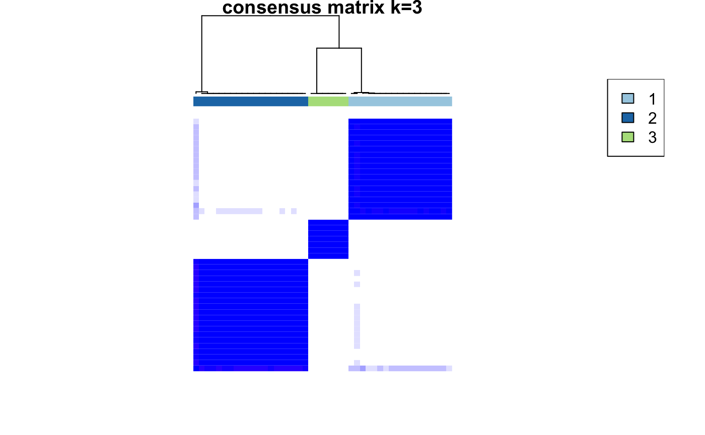
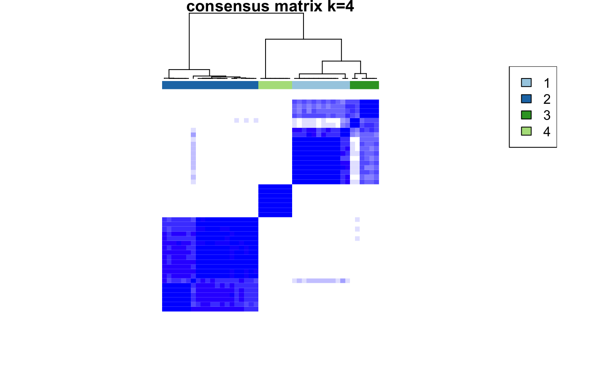
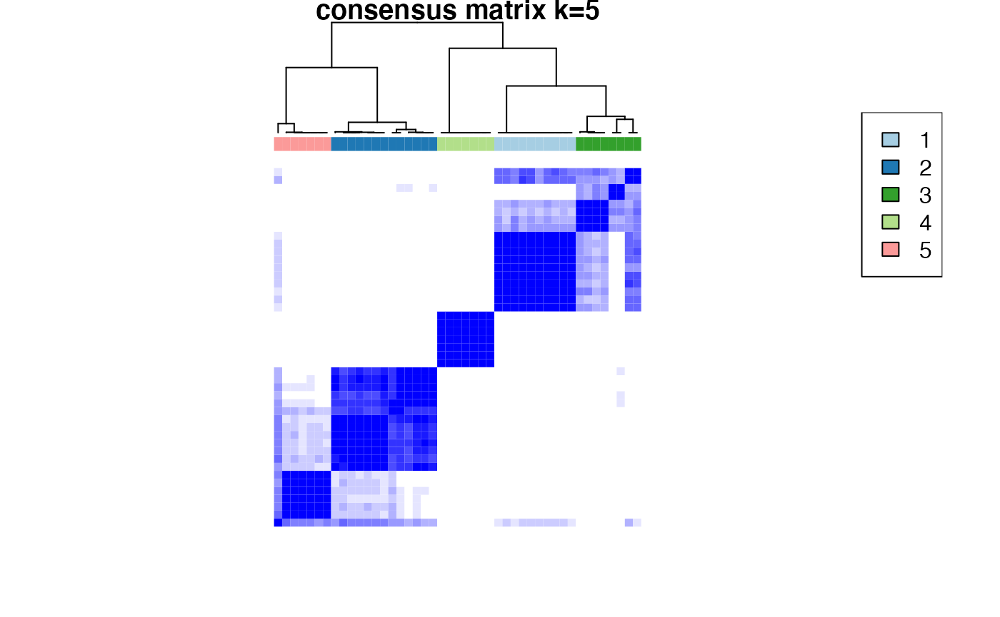
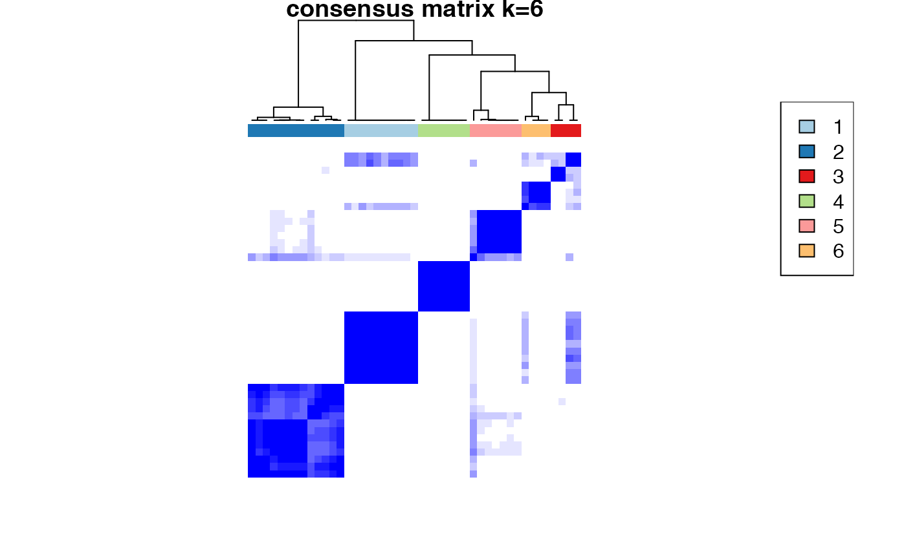
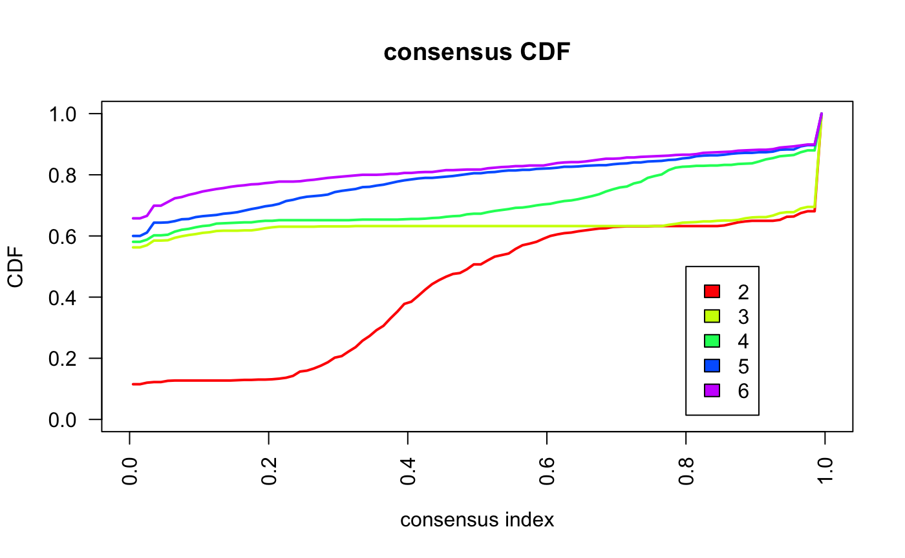
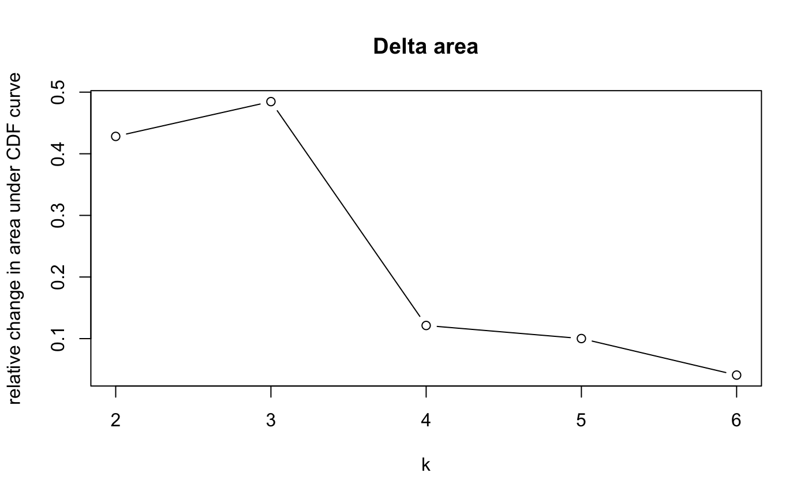
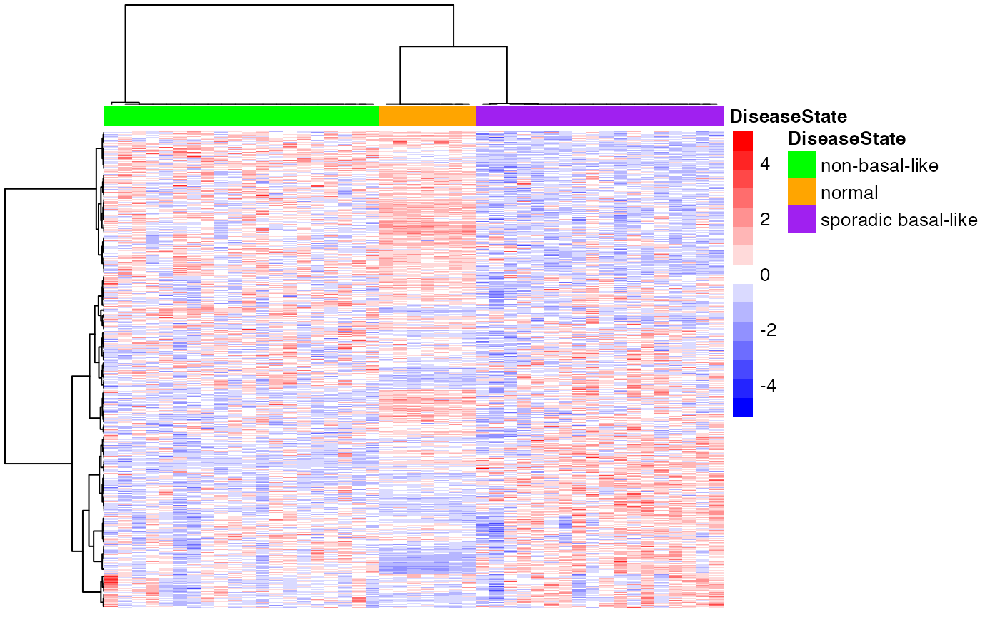

vignettes/docs/Clustering.Rmd
Clustering.Rmd
library(BS831)
library(Biobase)
library(mclust)
#source("http://bioconductor.org/biocLite.R")
#biocLite("ConsensusClusterPlus")
library(ConsensusClusterPlus)
library(cba)
library(pheatmap)In this module, we illustrate the use of Hierarchical Clustering, Consensus Clustering, and Model Based Clustering (or Probabilistic Clustering) based on Finite Mixtures.
Notice that in this case, all three metods correctly partition the data, and Consensus Clustering and Probabilistic Clustering select the ‘correct’ number of clusters. We put ‘correct’ between quotes, since the known disease state partition is not necessarily the data-driven dominant partition (see Monti et al., Machine Learning 2003, Section 4.2.2, and note) for a discussion of this point).
We start by uploading the necessary data (a Breast Cancer dataset), and restricting the dataset to the 3 largest sample groups.
##
## BRCA1-associated non-basal-like normal sporadic basal-like
## 2 20 7 18
## restrict to 3 classes
samples.keep <- eset$Characteristics.DiseaseState %in%
c("non-basal-like","sporadic basal-like","normal")
cancerSet <- eset[,samples.keep]
pheno <- cancerSet$Characteristics.DiseaseState
table(pheno)## pheno
## non-basal-like normal sporadic basal-like
## 20 7 18We first apply simple hierarchical clustering to the 4K-gene dataset. As it is shown below, the clustering results already perfectly recapitulate the known stratification.
## hclustering + heatmap
assayData <- Biobase::exprs(cancerSet)
## use Eculidean distance for columns/samples
## use ward as agglomeration rule
hc01.col <- hcopt(dist(t(assayData)),method="ward.D")
## use 1-correlation as distance for for rows/genes
## use ward as agglomeration rule
hc01.row <- hcopt(as.dist(1-cor(t(assayData))),method="ward.D")
## making heatmap
annot <- data.frame(as.factor(cancerSet$Characteristics.DiseaseState))
rownames(annot) <- colnames(assayData)
colnames(annot) <- c("DiseaseState")
annotCol <- list(DiseaseState = c("green", "orange", "purple"))
names(annotCol$DiseaseState) <- levels(annot$DiseaseState)
heatmaptitle <- paste("Breast Cancer Dataset: ", "top MAD-filtered 4k genes", sep = "")
pheatmap(assayData,
title=heatmaptitle,
color=colGradient(c("blue","white","red"),length=15),
annotation_col = annot,
annotation_colors = annotCol,
cluster_rows=hc01.row,
cluster_cols=hc01.col,
show_rownames = FALSE,
show_colnames = FALSE,
scale = "row")
We next apply Consensus Clustering, to try to determine, in a data-driven fashion, the number of clusters.
## next, run consensus clustering
CCout <- ConsensusClusterPlus(Biobase::exprs(cancerSet),maxK=6,reps=50,pItem=0.8,pFeature=1,
innerLinkage="ward.D", finalLinkage="ward.D",
title="cc",clusterAlg="hc",distance="euclidean",seed=1262118388.71279,
plot=NULL)
Based on the inspection of the consensus clustering plots, we select 3 as the ‘optimal’ number of clusters.
Consensus Clustering partitions the samples according to the known disease state.
## notice the use of a variable (rather then using 3 directly in the following commands)
nc <- 3
## remake heatmap, include both subtype and cluster assignments for visual comparison
annot1 <- data.frame(annot,cluster=CCout[[nc]]$consensusClass)
annotCol$cluster <- rainbow(n=nc)
names(annotCol$cluster) <- unique(annot1$cluster)
## use cluster tree from consensus clustering for column ordering in heatmap
clust.col <- CCout[[nc]]$consensusTree
## determine row ordering based on de-novo clustering
clust.row <- hcopt(as.dist(1-cor(t(exprs(cancerSet)))),method="ward.D")
##featureNames(cancerSet) <- fData(cancerSet)$hgnc_symbol
heatmaptitle <- "Heatmap consensus clustering assignment vs. subtype\n top 4k z-score normalized"
pheatmap(exprs(cancerSet),
title=heatmaptitle,
color=colGradient(c("blue","white","red"),length=15),
annotation_col = annot,
annotation_colors = annotCol,
cluster_rows=clust.row,
cluster_cols=clust.col,
show_rownames = FALSE,
show_colnames = FALSE,
scale = "row")
Finally, we apply Probabilistic Clustering as implemented in Mclust. We score models with numbers of clusters in the 1-4 range.
Probabilisti Clustering also selects the ‘correct’ number of clusters (3) and partitions samples according to the known disease state.
## ----------------------------------------------------
## Gaussian finite mixture model fitted by EM algorithm
## ----------------------------------------------------
##
## Mclust VEI (diagonal, equal shape) model with 3 components:
##
## log-likelihood n df BIC ICL
## -200111.4 45 16004 -461144.6 -461144.6
##
## Clustering table:
## 1 2 3
## 18 20 7
## show cluster assignments (and disease state)
head(data.frame(MC$classification,pData(cancerSet)$Characteristics.DiseaseState))## MC.classification pData.cancerSet..Characteristics.DiseaseState
## GSM85480 1 sporadic basal-like
## GSM85490 1 sporadic basal-like
## GSM85500 2 non-basal-like
## GSM85484 1 sporadic basal-like
## GSM85478 1 sporadic basal-like
## GSM85516 3 normal## non-basal-like normal sporadic basal-like
##
## 1 0 0 18
## 2 20 0 0
## 3 0 7 0